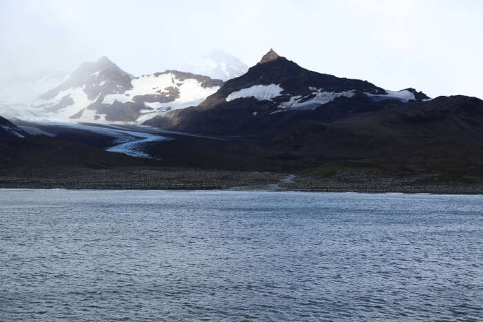
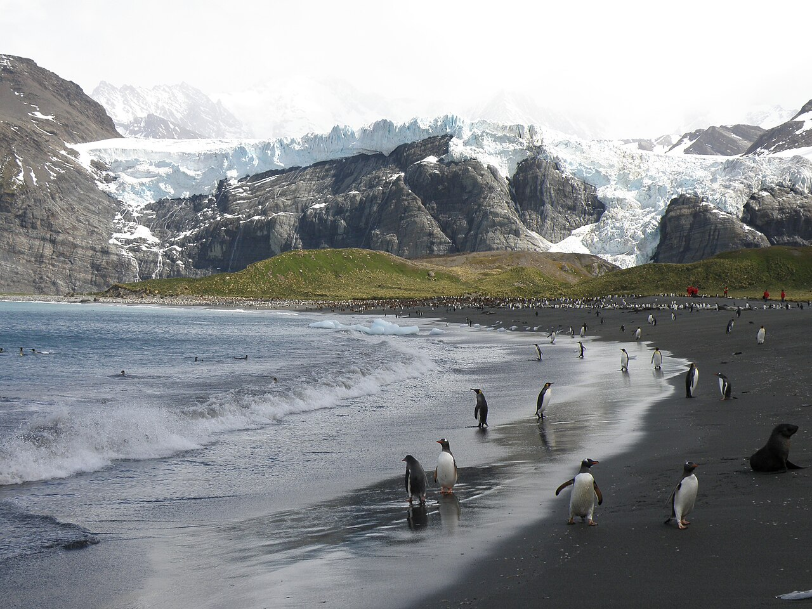
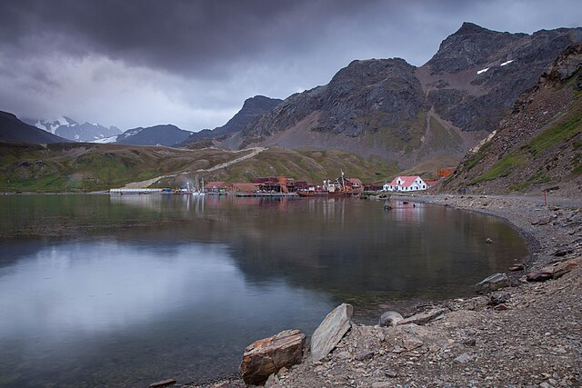
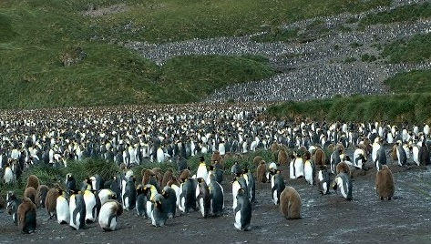
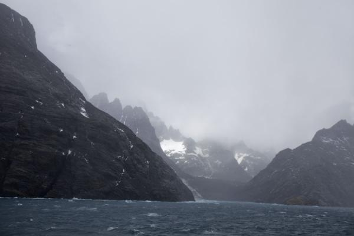
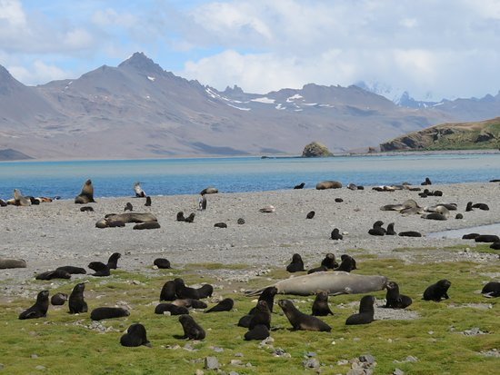
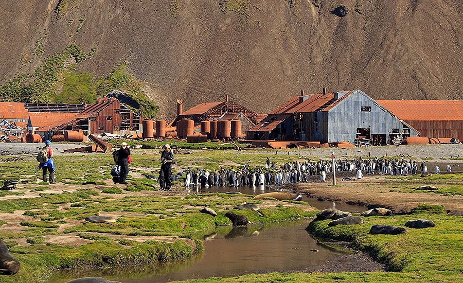

South Georgia: Island Overview
South Georgia is a crescent-shaped island approximately 170 km long and 30 km wide, located at 54°S latitude in the South Atlantic Ocean. It sits roughly 1,400 km southeast of the Falkland Islands and 1,700 km northeast of the tip of the Antarctic Peninsula. Despite its proximity to the global imagination of Antarctica, South Georgia is not part of the Antarctic continent. It is a British Overseas Territory, administered by the Government of South Georgia and the South Sandwich Islands (GSGSSI) from Stanley, Falkland Islands.
The island was formally claimed by Great Britain in 1908, though it had been known to mariners since at least 1675 when Anthony de la Roché sheltered there during a storm. Captain James Cook made the first recorded landing in January 1775, naming it Isle of Georgia after King George III and declaring British sovereignty. Cook's journal entry was prophetic: he observed enormous numbers of seals and penguins, concluding the island would attract commercial hunters — which it did, devastatingly so.
Climate and Weather
South Georgia's climate is classified as subantarctic oceanic — cold, persistently wet, and persistently windy. The island sits in the Furious Fifties, a zone of strong westerly winds that circle the Southern Ocean. Average summer temperatures at sea level range from 2°C to 8°C. Rainfall is heavy and unpredictable year-round; South Georgia receives more precipitation than almost any other subantarctic island. Fog, low cloud, and sudden squalls are normal even in December and January. Despite this, the austral summer (November–March) brings reliable enough conditions for expedition cruise operations and extended shore landings.
The island is heavily glaciated, with more than 160 named glaciers. The Salvesen Range and Allardyce Range form a near-continuous mountain spine along the island's length, most of which exceeds 2,000 m. The glaciers descend steeply to the sea, and in several bays — notably Drygalski Fjord and the Cumberland Bay area — calving ice creates floating bergs that make for dramatic Zodiac cruising conditions.
Governance and Visitor Permits
All vessels visiting South Georgia must obtain a permit from the Government of South Georgia and the South Sandwich Islands (GSGSSI) prior to arrival. Passenger vessels are also required to be members of IAATO — the International Association of Antarctica Tour Operators — which self-regulates the industry and applies a code of conduct governing wildlife interactions, site visit protocols, and biosecurity measures. The GSGSSI charges an Environment Management Plan (EMP) fee per visitor, which funds conservation and rat eradication programs. All expedition operators include this fee in their pricing.
"South Georgia is not just a place. It is a visceral confrontation with wildness on a scale that the rest of the world has almost entirely forgotten."
South Georgia Wildlife Guide
No wildlife destination in the Southern Hemisphere — and few anywhere on Earth — matches South Georgia for the sheer scale and accessibility of its animal populations. The island sits within a zone of extraordinary marine productivity driven by the convergence of cold Antarctic and warmer subantarctic waters, generating a krill biomass that supports the entire food web: from the penguin chick to the sperm whale. What makes South Georgia exceptional is not just the diversity of species, but the fact that most of them exist in concentrations that are genuinely difficult to process without being there. The numbers below are not estimates inflated by enthusiasm — they are scientific census figures.
The world's second-largest penguin (after the emperor) and South Georgia's most iconic resident. Unlike most penguin species, king penguins do not breed seasonally — they breed on a 14-month cycle, meaning chicks in various stages of development are present on the beaches at all times of year. The brown, fluffy "oakum boys" (chicks in downy juvenile plumage) were once mistaken by early explorers for a separate species. St Andrews Bay, Gold Harbour, and Salisbury Plain are the principal colonies. King penguins are completely fearless of humans and will walk directly up to expedition guests.
South Georgia hosts approximately 50% of the world population of the largest pinniped species on Earth. The bulls (beachmasters) are extraordinary animals — up to 4.5 m in length and 3,500 kg, their wrinkled proboscis inflating into a resonant roar during breeding season battles. Females weigh a comparatively modest 400–900 kg. The moulting season (December–March) creates dense carpets of seals on the beaches, often blocking access routes that Zodiac landing parties must carefully navigate around.
One of conservation's great success stories — and simultaneously one of expedition cruising's greatest practical challenges. Hunted to near-extinction by the late 19th century, the Antarctic fur seal has rebounded to a global population now estimated at over 3 million, of which a dominant majority breed on South Georgia. Pups are born in November–December; from December through February, territorial bulls aggressively guard beach sections. Expedition guides carry walking poles to gently redirect fur seals that approach groups. Their speed (faster than a walking human over short distances) is consistently underestimated by first-time visitors.
The wandering albatross has the longest wingspan of any living bird — up to 3.5 m — and uses dynamic soaring to cover 75,000 km per year without significant energy expenditure. South Georgia is one of its primary breeding sites globally, with nesting colonies at Bird Island and several other locations. Pairs bond for life and return to the same nest site each year. Breeding adults and chicks can be observed from December through March. Longline fishing bycatch is the primary threat to this vulnerable species.
Humpback whales migrate to South Georgia waters from December to February to feed on the dense krill concentrations. The waters off the island's north coast are among the most productive humpback feeding grounds in the Southern Ocean. Bubble-net feeding — a coordinated group hunting behaviour in which whales cooperate to herd krill to the surface — is commonly observed from small ships. Blue whales and southern right whales are occasional sightings; orca presence has increased in recent decades as the fur seal population recovered.
South Georgia hosts the world's largest macaroni penguin population — over 5 million breeding pairs. They are identifiable immediately by their dramatic golden-yellow crests, which give the species its name (after 18th-century British slang for an ostentatiously dressed young man). Macaroni penguins nest in dense, chaotic colonies on steep, grassy slopes — often above the more accessible gentoo penguin colonies below them. Gentoo penguins (Pygoscelis papua) and chinstrap penguins (Pygoscelis antarcticus) are also present at various sites.
Seabirds
Beyond the albatross and penguin families, South Georgia's waters support extraordinary seabird diversity. The grey-headed albatross (Thalassarche chrysostoma), light-mantled albatross (Phoebetria palpebrata), and black-browed albatross (Thalassarche melanophris) all breed on the island. South Georgia pintail, South Georgia pipit (the world's southernmost songbird), and several species of prion and shearwater are year-round residents. Giant petrels — both northern (Macronectes halli) and southern (Macronectes giganteus) species — are common scavengers on beaches alongside the seals and penguins, filling the ecological niche occupied by vultures on other continents.
Key Landing Sites on South Georgia
South Georgia is accessed entirely by Zodiac inflatable boat. There are no piers or jetties suitable for conventional ship-to-shore transfer at any wildlife landing site. Zodiac wet landings — where guests step from the inflatable directly onto a beach in waterproof boots — are the standard method. All expedition operators carry 8–12 Zodiacs and conduct briefings before each landing. IAATO site guidelines govern the specific areas within each landing site where guests may walk, rest times for wildlife disturbance, and maximum group sizes at sensitive features. The following seven sites appear on almost every South Georgia itinerary.

St Andrews Bay
The superlative among superlatives. St Andrews Bay is home to the single largest king penguin colony on Earth — 250,000+ breeding pairs occupying a broad coastal plain backed by the Heaney and Cook glaciers. The scale is difficult to describe adequately: the colony covers several square kilometres, the sound of 500,000 penguins vocalising is audible from the ship, and the landscape appears to move as if the ground itself is alive. Southern elephant seals occupy every beach not claimed by penguins. The landing site is weather-dependent due to surf conditions — operators sometimes anchor overnight to wait for the right window.

Gold Harbour
If St Andrews Bay is the most overwhelming, Gold Harbour is the most beautiful. Set in a sweeping bay at the foot of the Salvesen Mountains, with the Bertrab Glacier descending directly to the beach behind the penguin colony, Gold Harbour delivers both wildlife density and dramatic scenery in one composition. King penguins pack the beach in their thousands, while elephant seal bulls haul out between the penguin groups. The backdrop of glacial ice — frequently tinged blue and white — makes this the single most photographed location on any South Georgia itinerary.

Grytviken
The only settlement on South Georgia and the site of the island's first and largest whaling station, operational from 1904 to 1965. Today Grytviken contains the South Georgia Museum, the island's only church (Whalers' Church, 1913), a government administration post, and the grave of Sir Ernest Shackleton. The rusted machinery of the whale-processing plant remains largely in place as an industrial ruin. All expedition ships call at Grytviken — it is the island's only port of formal entry, where the government officer boards for permit checking and biosecurity inspection. The post office here issues South Georgia stamps coveted by philatelists worldwide.

Salisbury Plain
South Georgia's third-largest king penguin colony and, for many visitors, the most photogenic in terms of light and landscape composition. Salisbury Plain is a broad tussock-grass plain that opens onto the beach, with the penguin colony spreading across the flat ground and providing an uninterrupted view across tens of thousands of birds. The plain is at the head of the Bay of Isles — a complex area of inlets, glacial outwash, and tussock hills accessible only to ships able to navigate the relatively shallow channels. This is one of the sites where small ship size provides the most direct advantage.

Drygalski Fjord
The southernmost accessible point on South Georgia, Drygalski Fjord is a narrow, ice-carved inlet with near-vertical walls reaching several hundred metres. The fjord terminates at the Risting Glacier, which calves actively into the fjord water. Zodiac cruising within the fjord is among the most dramatic ice experiences available outside Antarctica proper — ice floes support resting leopard seals, and the acoustic reflectivity of the fjord walls amplifies every glacier crack and calving splash. The fjord is occasionally blocked by drift ice, making access weather and season-dependent.

Fortuna Bay
Fortuna Bay holds a specific historical significance as the penultimate waypoint of Shackleton's 1916 crossing. After descending from the Fortuna Glacier, Shackleton's team reached this bay — exhausted, frostbitten, and having been continuously moving for over 30 hours — before undertaking the final climb over the pass to Stromness. Today the bay offers good populations of king penguins and Antarctic fur seals. Many expeditions combine a landing at Fortuna Bay with a Zodiac cruise along the glacier face and a short guided walk to the heights above the bay, following Shackleton's approximate descent route.

Stromness
The ruins of Stromness whaling station stand at the end of the valley down which Shackleton, Worsley, and Crean descended in May 1916 to reach safety. It was here that station manager Thoralf Sørlle initially failed to recognise Shackleton — gaunt, bearded, and dressed in rags — before the moment of recognition that became one of the most emotional scenes in polar exploration history. Stromness operated from 1907 to 1931 and is now an atmospheric ruin, sealed for safety reasons but visible from the shoreline and adjacent hillsides. The bay in front of the station is excellent fur seal habitat.
Shackleton's Legacy: The Story of Endurance
No expedition to South Georgia is complete without understanding the events of 1914–1917. Ernest Shackleton's Imperial Trans-Antarctic Expedition — his attempt to achieve the first land crossing of the Antarctic continent — became instead the most celebrated survival story in the history of exploration. South Georgia features at both the beginning and the end of this story.
The expedition left South Georgia's Grytviken in December 1914, Shackleton having received weather intelligence from the Norwegian whalers stationed there. The Endurance — a 44 m, three-masted barquentine purpose-built for polar conditions — sailed south into the Weddell Sea. By January 1915, the ship was beset in pack ice. She never moved under her own power again.
-
1914
Endurance departs Grytviken
December 5, 1914. Shackleton receives last intelligence from Norwegian whalers at Grytviken, South Georgia, and sails south toward the Weddell Sea to begin the Trans-Antarctic crossing. The crew of 28 includes Frank Worsley (captain), Tom Crean (second officer), and photographer Frank Hurley.
-
1915
Endurance beset and crushed
January 18, 1915: Endurance is trapped in pack ice at 76°S. Over the following nine months, the ship drifts northward in the ice. October 27, 1915: Shackleton orders the ship abandoned as the ice crushes the hull. November 21, 1915: Endurance sinks beneath the Weddell Sea at 68°38'S, 52°26'W. The crew camp on the drifting ice, salvaging three lifeboats.
-
1916
The boat journey to Elephant Island
April 9, 1916: The ice floe breaks up and Shackleton launches the three lifeboats. After six days in treacherous open water, the crew lands on Elephant Island — the first time they have stood on solid ground in 497 days. It is not a rescue location; no ships pass. Shackleton selects 5 men and prepares the largest lifeboat, James Caird, for an open-ocean voyage to seek help.
-
1916
800 miles to South Georgia
April 24, 1916: The James Caird — 6.9 m long — departs Elephant Island carrying Shackleton, Worsley, Crean, McNish, McCarthy, and Vincent. They cross 1,287 km of the most dangerous ocean on Earth in 16 days, navigating by sextant through near-constant storms, ice, and wave heights of up to 15 m. May 10, 1916: they arrive at King Haakon Bay, South Georgia — but at the uninhabited, south-facing coast, opposite the whaling stations.
-
1916
The crossing of South Georgia
May 18–19, 1916: Shackleton, Worsley, and Crean set out on foot to cross South Georgia from King Haakon Bay to Stromness — a 32 km route over unmapped glaciers, mountain passes, and ridges, carrying a rope, ice axes, and a primus stove. They complete the crossing in 36 continuous hours, arriving at Stromness whaling station on the morning of May 20. The crossing is considered one of the most remarkable feats of navigation and endurance in exploration history.
-
1916
Rescue of the Elephant Island party
August 30, 1916: After three failed attempts blocked by sea ice, the rescue ship Yelcho (lent by the Chilean government) reaches Elephant Island. All 22 men have survived 137 days under two upturned lifeboats. Not one life was lost in the entire expedition — a fact Shackleton considered his greatest achievement.
-
1922
Shackleton dies at Grytviken
January 5, 1922. Shackleton dies of a heart attack aboard his ship Quest at Grytviken harbour, aged 47, at the outset of what would have been his fourth Antarctic expedition. At the request of his wife Emily, he is buried at Grytviken cemetery rather than being repatriated to England. His grave remains the most visited site on South Georgia, marked with a simple granite headstone facing south.
-
2022
Endurance wreck discovered
March 5, 2022: The wreck of Endurance is located by the Endurance22 expedition at a depth of 3,008 m in the Weddell Sea — intact, upright, and in extraordinary condition given 107 years on the seabed. The ship is a protected historic site under the Antarctic Treaty; no salvage is permitted. The discovery was made using an autonomous underwater vehicle deployed from the South African icebreaker Agulhas II.
For expedition guests, the Shackleton story is not an abstract historical footnote — it is physically present at Grytviken (the grave), at Stromness (the arrival point), at Fortuna Bay (the descent), and in the crossing of the mountain ridge above Husvik. Several operators offer guided walks above the whaling stations that retrace portions of the 1916 route, providing a direct — if heavily curated — connection to the event.
For further reading on Shackleton's crossing, the primary source is Frank Worsley's Shackleton's Boat Journey (1940) and Alfred Lansing's Endurance (1959). A Wikipedia overview of the Imperial Trans-Antarctic Expedition provides a solid starting framework, though it does not capture the texture of the original accounts.
The Whaling Era: 1904–1965
South Georgia's human history is dominated by a single, deeply ambivalent industry. Between 1904 and 1965, the island was one of the world's most productive whaling centres, processing tens of thousands of whales — primarily blue whales, fin whales, humpbacks, and sperm whales — and reducing the Southern Ocean's whale populations to a fraction of their pre-industrial levels. The scale of this depletion remains one of the most significant ecological events in recorded history.
The first and largest whaling station, Grytviken, was established by Norwegian whaling captain Carl Anton Larsen in 1904. At its peak in the 1920s, Grytviken processed up to 7,000 whales per year. Other stations followed: Leith Harbour (1909–1965), Stromness (1907–1931), Husvik (1907–1930), Ocean Harbour (1909–1920), and Prince Olav Harbour (1917–1931). All are now ruins, though Leith Harbour and Grytviken are the most substantial. Grytviken's church, manager's house, and processing machinery remain largely intact and open to visitors under supervision.
The industry collapsed not because of any conservation intervention but because it had simply consumed too much of its own resource. The blue whale population of the Southern Ocean was reduced by more than 95% between 1904 and 1965. The International Whaling Commission's moratorium on commercial whaling (1986) came decades after the industry in South Georgia had already ended. The whale processing facilities closed at Grytviken in 1965 when the whale populations could no longer sustain economic operations.
The South Georgia Heritage Trust (sght.org) — a UK-registered charity — has led the most significant recent conservation effort: the complete eradication of introduced rats and mice from the island. These rodents, introduced accidentally by the whalers, had devastated ground-nesting seabird populations for a century. The SGHT's 2011–2015 rodent eradication program covered all 167 km² of the island and has been followed by measurable recovery of pipit and duck populations. It is the largest island rodent eradication project in history.
Planning Your South Georgia Expedition
A South Georgia small ship cruise requires more logistical planning than a conventional cruise holiday. The combination of remoteness, limited departure dates, significant advance booking timelines, and specific kit requirements makes preparation essential. The following section addresses the questions most commonly raised by first-time expedition cruise guests.
How Far in Advance to Book
For peak season departures (December–January), booking 12–18 months in advance is standard practice for the most popular operators. Poseidon Expeditions typically releases its South Georgia season 12–15 months ahead; Aurora Expeditions operates on a similar timeline. Some 2026 peak-season departures were already sold out by mid-2025. If you are flexible on dates and cabins, last-minute availability occasionally appears as late as 3 months before departure — but specific cabin categories and specific ships may not be available. Travelling as a couple or solo traveller is administratively simpler than booking as a group, as operators can often pair solo travellers to eliminate the single supplement.
IAATO Regulations for Visitors
All expedition guests are expected to comply with IAATO visitor guidelines as a condition of landing. Key rules include:
- Maintain a minimum distance of 5 metres from all wildlife (penguins and seals may approach you — do not move toward them)
- Do not touch wildlife under any circumstances
- Stay on designated pathways and within flagged landing site boundaries
- Do not bring food or drink ashore
- Follow the expedition team's instructions at all times — guides have authority to require immediate return to Zodiacs if conditions or wildlife behaviour require it
- Complete biosecurity boot-washing protocols before and after every landing to prevent species introduction
Full visitor guidelines are published by IAATO (iaato.org). All reputable expedition operators conduct a mandatory comprehensive briefing within 24 hours of the first planned landing.
What to Pack: Essential Kit
- Waterproof outer layer (jacket + trousers): Gore-Tex or equivalent — this is not optional. South Georgia is wet even in summer. The operator typically supplies branded waterproof jackets; verify before packing your own.
- Insulating mid-layers: Fleece and down layers that can be added or removed. Temperatures range from 2°C to 8°C on shore, but can feel far colder in wind and rain.
- Waterproof boots (knee-high): Most operators require guests to purchase or hire rubber boots (wellingtons) for Zodiac wet landings. Confirm whether these are provided. Do not rely on hiking boots.
- Base layers (wool or synthetic): Merino wool is preferred for odour management on a 3-week voyage with limited laundry facilities.
- Seasickness medication: The Drake Passage is notoriously rough. Consult your physician before departure. Scopolamine patches and meclizine tablets are commonly used. Acupressure wristbands are a non-pharmaceutical option.
- Camera with telephoto lens: Wildlife behaves naturally but distances vary. A 300–500mm equivalent telephoto is recommended for birds and distant seals. Bring twice as many memory cards as you think you need.
- Trekking poles: Useful for uneven tussock-grass terrain and beach landings. Not required but recommended for guests with balance or knee concerns.
- Sun protection (SPF 50+ and polarised sunglasses): Southern Ocean sun at low angles is deceptively intense, particularly when reflected off water and snow.
- Comprehensive travel insurance: Medical evacuation from South Georgia is extremely expensive. Your policy must specifically cover polar expedition operations and medical evacuation. Verify coverage before departure.
- Power adaptors: Ships may use different plug standards. Confirm with your operator. USB charging is universally available but plug sockets vary.
Fitness and Physical Requirements
A South Georgia expedition does not require advanced fitness, but it does require the ability to step in and out of a moving inflatable boat on a sloping beach, walk on uneven tussock-grass terrain for up to 3 hours, and stand or walk on gravel beaches for extended periods. Some optional activities — including hikes above whaling stations and, for some operators, ski mountaineering — require specific fitness levels and will be assessed individually. Guests with significant mobility limitations can still participate in most Zodiac cruises and some beach landings, but should discuss their specific situation with the operator before booking.
About the Sea Spirit (Poseidon Expeditions)
The Sea Spirit — Poseidon Expeditions' flagship for South Georgia — is a purpose-built expedition ship, 90.6 m in length, with ice-strengthened hull classification. Built in 1991 and refitted for polar expedition operations, she carries 114 guests in an all-suite configuration: every cabin on the ship is a private suite with exterior windows or portholes, sitting area, and en-suite bathroom. Suite categories include Standard Suites (lower deck), Superior Suites, and Deluxe Suites (upper deck). Retractable fin stabilizers significantly reduce rolling in heavy seas. The ship carries 8 Zodiacs, maintaining sufficient landing craft capacity to conduct simultaneous shore operations for all guests.
Connecting Flights to Ushuaia
Ushuaia (USH), Argentina, is served by domestic flights from Buenos Aires Aeroparque (AEP) and Buenos Aires Ezeiza (EZE). Aerolíneas Argentinas operates the primary route. Most international travellers route through Buenos Aires. The flight from Buenos Aires to Ushuaia takes approximately 3 hours 15 minutes. Recommended arrival: 1–2 days before embarkation to allow for flight delays and to acclimatise to Ushuaia. The town offers good restaurants and accommodation options across all price points. Embarkation day typically involves boarding in early afternoon and a safety drill before sailing in the evening.
See Our 2026 Operator Rankings
We've independently ranked all 6 leading South Georgia small ship cruise operators across wildlife access, ship quality, guiding excellence, and value for money.